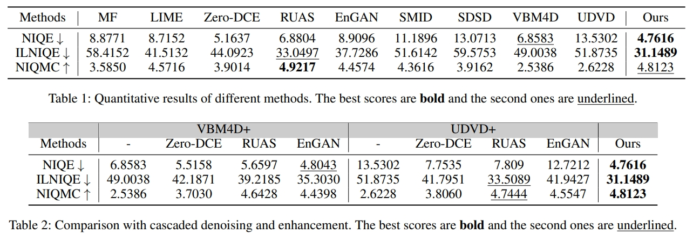

Method
Key Idea:
(1) Objective bottleneck. We adopt an entropy control mechanism as the objective bottleneck. Without any explicit alignment, it implicitly fuses spatial-temporal information to provide reliable guidance of the center pixel.
(2) Content bottleneck. We adopt neural representation as the content bottleneck, which utilizes the inductive bias of the neural network to predict the noise-free signal, getting rid of any assumption on the noise model.
(3) Chromatic Retinex. We adjust the formulation of the Retinex model into a chromatic illumination form that facilitates suppressing the color bias artifacts.
Figure 1. The framework of the proposed bottleneck neural representation. A constrained deep embedding is first extracted and then transformed into enhanced Retinex-based layer-wise representations. Hybrid neural representation provides richer intrinsic information but still set bottlenecks from the perspective of content. Entropy minimization applies the bottleneck constraint in the objective view to suppress noise and correct illumination. A chromatic Retinex representation helps align layer-wise frames, which facilitates self-supervised learning.
Results
Table 1. Subject results on DRV-dynamic datasets.
Table 2. Objective results on DRV-dynamic dataset.

Citation
@article{huang2024seeing,
title={Seeing Dark Videos via Self-Learned Bottleneck Neural Representation},
author={Huang, Haofeng and Yang, Wenhan and Duan, Ling-Yu and Liu, Jiaying},
booktitle={Proceedings of the AAAI Conference on Artificial Intelligence},
year={2024},
}
-
Return to the STRUCT Project